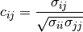

cov_to_corr¶
- gammapy.stats.cov_to_corr(covariance)[source]¶
Compute correlation matrix from covariance matrix.
The correlation matrix
 is related to the covariance matrix
is related to the covariance matrix  by:
by:
Parameters: covariance : numpy.array
Covariance matrix.
Returns: correlation : numpy.array
Correlation matrix.